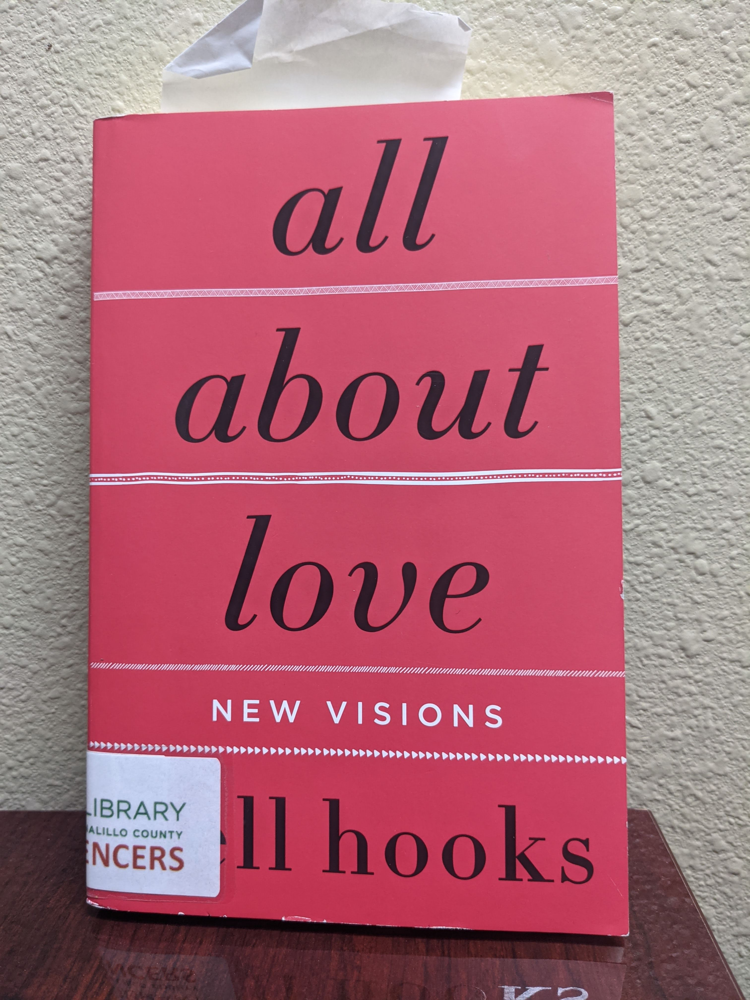
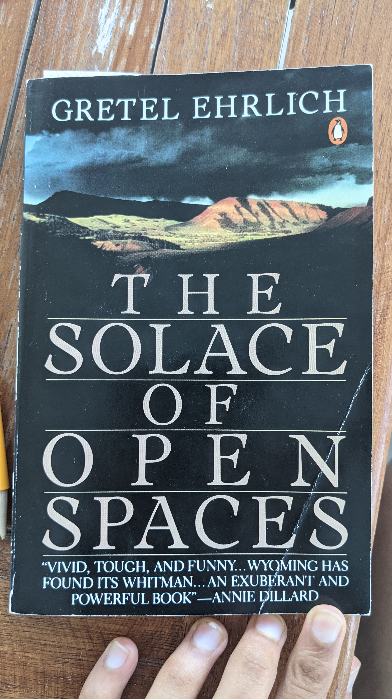
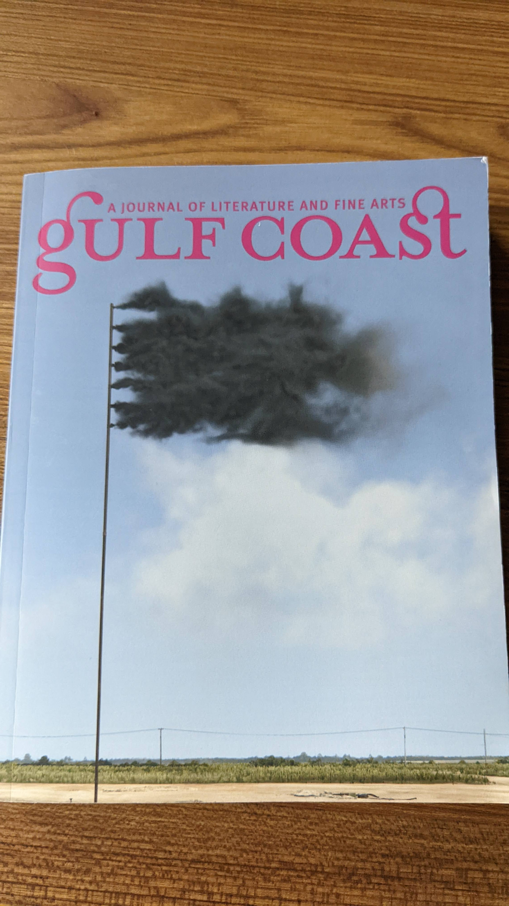

(At Least) 12 Books in 12 Months - 2021
Clap When You Land by Elizabeth Acevedo (January)
Interview With a Vampire by Anne Rice (February)
Braiding Sweetgrass by Robin Wall Kimmerer (March)
They Called Us Enemy by George Takei, Justin Eisinger, Steven Scott, and Harmony Becker (April)
See No Stranger by Valarie Kaur (May)
A Midsummer Night's Dream by Shakespeare (June)
All About Love by bell hooks (June Bonus Round!)
West Wind by Mary Oliver (July)
A Thousand Mornings by Mary Oliver (July Bonus Round!)
Voyage Along the Horizon by Javier Marías (July Bonus Round!)
The Solace of Open Spaces by Gretel Ehrlich (August)
What The Living Do by Marie Howe (September)
Gulf Coast Journal of Literature and Fine Arts Vol. 34.1 (October)
The Argonauts by Maggie Nelson (November)
Incarnadine by Mary Szybist (December)See also:
- (At Least) 12 Books in 12 Months - 2017
- (At Least) 12 Books in 12 Months - 2018
- (At Least) 12 Books in 12 Months - 2019
- (At Least) 12 Books in 12 Months - 2020
Clap When You Land by Elizabeth Acevedo (January)

I was gifted this book by Estella Xin for our Turing Scholars secret santa! It was a cute young adult fiction book about long lost sisters. I had just read two heavy works of nonfiction in a row, so this was a nice change of pace.
Interview With a Vampire by Anne Rice (February)
Continuing the theme of light nonfiction books, I was craving a book about vampires, so I found this one through the library. I wanted drama, and I really liked the beginning world building set in New Orleans. I found the latter half of the book to be a bit boring, though.
Braiding Sweetgrass by Robin Wall Kimmerer (March)
The author of this book, Robin Wall Kimmerer, is an indigenous plant ecologist. I loved this work of non fiction, in which she shared her worldview.
One theme that resonated with me was the importance of gratitude. Gratitude is central to my own spirituality, so it was interesting to see how it manifests itself in certain indigenous cultures.
One question Kimmerer prompts in the book is in what ways are humans beneficial to nature. The point she makes is that humans are not separate from the world around us, and if everything else has a place and a role, then humans must as well. So, as humans, we should not view ourselves as strictly harmful, but instead we must ask how we can best play our role in the mutual relationships that make up our environments.
This book helped me deepen my own relationship with nature. I was preparing for an intense backpacking camping trip in the early, cold northeast spring, and everytime I was nervous about the coldness and harshness I was anticipating at night, I would read a chapter of this book to rekindle my wonder for the natural world. Although the trip morphed into a half-as-long very tame car camping trip, this book helped me finally identify as "outdoorsy" insofar as I want to be outside and revel in all of nature's glory, even the less than glamorous parts.
Kimmerer pondered whether it is possible to become indigenous to a place. That chapter felt especially relevant to me, as someone who has moved around so much as a child (eight states and counting!). She eventually came down skeptical of the idea, but I think her analysis prompted me to ask myself what it would feel like to set down deeper roots in a place and in a community. I crave a community that I am integrated deeply enough into that the success of the community feels intertwined with my own success.
The book really made me want to become a gardener, at least a little bit, which was definitely Kimmerer's intention, but I wonder how to square that with my desire to be absolutely surrounded by a flood of people in a city. Cultivating a garden without having land is the first hurdle, which can, to some extent, be handled with community gardens (although when I looked into the one in Boston, the waiting list was two years long for a plot). But it is even harder without staying put in one place long enough to grow over multiple seasons. So, for the time being, I'm putting my gardening aspirations aside until my life is stable enough to sustain further life.
Her description of muckraking a pond as an extension of her mothering instinct was particularly poignant to me. I also liked her description of how diverse agricultural environments can promote growth in a way that monocultural farming destroys (the three sisters planted together perform better than each being divided up into a third of the plot each).
Although I understand where she was coming from, and I respect her decision to appeal to a wide audience, I did feel that some of her political perspectives were a little bit watered down. I also felt that some of her connections from observations about the natural realm to economic takeaways felt like they relied on forced metaphors, especially towards the end of the book. I didn't feel that either of these nitpicks detracted from the book as a whole, but were still worth mentioning.
This book was awesome, and will definitely be on my list of favorites at the end of the year.
They Called Us Enemy by George Takei, Justin Eisinger, Steven Scott, and Harmony Becker (April)
Read this short graphic novel about George Takei's experience in Japanese internment camps during World War II for a class I took in Princeton's public policy school on policing. Kind of cheating because I read it for class, but I fell really behind on leisure reading because I was reading so much for my classes (the other reading-heavy class being a political philosophy class on problems of risk in law and society).
See No Stranger by Valarie Kaur (May)
This is another book Estella Xin gifted me as my Turing secret santa and I absolutely loved it. Valarie Kaur is a Sikh lawyer, activist, and filmmaker and she subtitled the book "A memoir and manifesto on revolutionary love". She attended Stanford for undergrad, Harvard Divinity School, and then Yale Law School, which honestly almost sounds like satire. At first I was worried the book would be a bit too flowery/gimmick-y, but it ended up being very profound for me, and I think Kaur made some very compelling points.
One thing I really appreciated was how Kaur worked within the traditional warrior metaphor (especially as it rings true to her Sikh identity), but also extended it to a further birthing metaphor. She compares doing the work of organizing to the work of childbirth. She points out that a midwife says "breath, push, breath, push" in a cycle, rather than just instructing you to breath in once, and then instructing you to keep pushing the whole time after that.
She introduces the idea of vismaad (TODO go back and find how she originally describes it). As a rhetorical device, pretty much everytime later in the book she invokes the word, I immediately felt a tear come to my eye. This book was a real tear jerker, and many of the tears were from positive rather than negative emotions.
One of the most interesting subplots to me was how she navigated complicated extended family dynamics in a transformative way as the victim of harm.
I really, really loved this book. It will definitely be on my list of favorites at the end of the year.
A Midsummer Night's Dream by Shakespeare (June)
This was a short book I had been meaning to read for a while for two reasons. Firstly, I remember this super in depth episode of Suite Life of Zack and Cody from when I was a kid all about how they did a school performance of A Midsummer Night's Dream and honestly I had no idea what was going on so I wanted to read the original reference. Secondly, when I was in New York City in the summer of 2017, I had desperately wanted to get tickets to Shakespeare In the Park, and I had entered the ticket lottery every week. That summer they were doing A Midsummer Night's Dream and I never got a ticket to go even though I had mentally hyped myself up about it so much. So yeah, I felt I needed to read this eventually.
It was super short and entertaining to read! Just what I was looking for in terms of lighthearted fiction. Next up for when I'm feeling Shakespeare again is Hamlet so I can finally have read the source material for the "to be or not to be" soliloquy that I'm strangely familiar with ever since my friends had to memorize it freshman year of college.
All About Love by bell hooks (June Bonus Round!)

I'm spending the summer working at a Public Defender's office in Albuquerque, New Mexico. I picked this book up from the local library I pass everyday on my walk to and from my office. I had loved See No Stranger and wanted to read more about love as a concept. Bell hooks had also been heavily cited in many of the things I've enjoyed reading, including See No Stranger. So when I walked into the library and saw a central display with All About Love by bell hooks I was like "okay I know what I'm reading next lol".
Unfortunately, I set my expectations too high, and felt this book didn't necessarily live up to them.
One problem, for me personally, was that I've read so much stuff that has been so deeply influenced by bell hooks, that going back to read the source material meant most of it was not particularly new to me. If anything, that is more to bell hooks' credit that her work was so influential on current scholarship.
Another problem I had with the book was how it was framed as very self-help. The rhetoric felt too similar to other books I've read that have rubbed me the wrong way (like Dale Carnegie's How To Win Friends and Influence People which I had to read for a class in high school and I absolutely hated). Perhaps this is a function of when the book was written, but I also didn't love how the book took essentialist views of heteronormative gender. Finally, the book leaned a surprising amount on Christian theology, which just didn't resonate very strongly with me. This is hyperbolic, of course, but it was all very "men do this so we women must all do this because of course the Bible said ..." which felt like painting with a very broad brush and also felt very prescriptive without a ton of substance.
All said, I totally respect the place that this book deserves in the literature, and I think bell hooks has made incredible contributions with her work. I just personally was a little disappointed while reading this book based on my expectations.
West Wind by Mary Oliver (July)
Have I ever said that the day was too hot or too cold
or the night too long and as black as oil anyway,
or the morning, washed blue and emptied entirely
of the second-rate, less than happiness
as I stepped down from the porch and set out along
the green paths of the world?My first work of poetry! I have two friends (Diana Cao and Olivia Zhang) who are both much more knowledgeable about poetry than I am, but they both inspired me to learn more! First, Olivia reposted a post by an instagram account (@poetryisnotaluxury) of a Mary Oliver poem (Wild Geese) that I loved. Then I followed the account, and came across another poem (Moments) that I loved, which also happened to be Mary Oliver. Finally, Olivia posted one more poem (Don't Hesitate) that I loved, which also happened to be Mary Oliver. I took that as a sign that I should do a bit more digging.
I found this book of poems from the library, so that was convenient. After I was about halfway through the book, I asked Diana for advice on how to read poetry because I felt like I was just reading similarly to how I read prose, which felt wrong to me. She gave me great advice (approach the poem as a visual form of art arranged on the page before you dig into the substance!) and said she typically doesn't read poetry books cover to cover. I was enjoying it, though, and felt like I needed to read more poetry before I could form any opinions, so I went ahead and finished reading the poems over the course of June (and finished the book in early July).
Also, fun fact, Mary Oliver is from Ohio, too!
Favs from this collection: *Am I Not Among the Early Risers*; Spring; and Have You Ever Tried to Enter the Long Black Branches.
A Thousand Mornings by Mary Oliver (July Bonus Round!)

Have I lived enough?
Have I loved enough?
Have I considered Right Action enough, have I
come to any conclusion?
Have I experienced happiness with sufficient grattitude?
Have I endured loneliness with grace?I really didn't expect to double up on Mary Oliver poetry collections, but this book found me. When my friends from this summer and I took a weekend trip from Albuquerque to a cabin in Colorado, I asked to borrow any poetry books my friend Elisa Cibils happened to have laying around. I started A Thousand Mornings that Saturday morning, and finished it the next day.
Mary Oliver's poems have given me a really good outlet for something I've been thinking about since I read Braiding Sweetgrass. I can and should appreciate and nurture my love for the earth in the same way I appreciate and nurture my love for my friends, family, and romantic partners. In college, I used to feel like I should be an outdoorsy person just based on my aesthetic, but it wasn't until pretty recently that I really became an outdoorsy person who just wants nothing more than to go outside and touch grass. I aspire to have the same relationship with the world that Oliver does, and age with the same wisdom and playful spirit she did ("And I am in that delicious and important place, roaring with laughter, full of earth-praise").
Favs from this collection: I Go Down to the Shore; I Happened To Be Standing; Foolishness? No, It's Not; *The Gardener*; and The Man Who Has Many Answers.
Voyage Along the Horizon by Javier Marías (July Bonus Round!)

Fun story: I knew All About Love was very overdue, and I went in to my local library on the way home from work completely ready to pay a fine for my error. As I handed the book to a librarian, I asked where I could pay my fine. They looked at me quizically, took the book, and told me I would only have to pay if it was so wildly overdue that it had gone "into collection". They confirmed I didn't actually have any fines to pay, and seemed to almost inwardly laugh at my naivete. Maybe times have changed, because I certainly remember paying fines at the library when I was a kid!
Anyways, while I was at the library, I browsed a bit for a casual work of fiction to get my mind off the heavy realities of the world I was facing at work. This book was on one of the special library displays for cool writings about the Artic to help chill people out during the desert summer. This book, for example, was next to a Nordic cookbook that I leafed through. Sure, the display was a bit of a silly gimmick, but that's the kind of lovable goofiness you can expect from a local library.
Perhaps this is a spoiler, but the book was a work of fiction about an ocean expedition during the early 1900s that was ostensibly bound for Antartica, but that never even reaches any further south than Tangiers. So perhaps it was not perfectly categorized in the library display, but I respect the vision the librarians were going for.
I wasn't super impressed by the book overall, so I wouldn't really recommend it. No complaints or anything (it was at least entertaining enough to finish), but nothing spectacular either.
The Solace of Open Spaces by Gretel Ehrlich (August)

The day I was supposed to leave New Mexico at the end of summer, my flight got rescheduled from the beginning to the end of the day. Luckily, my kind friend (and co-worker!) Claire Cooley was in the area and picked me up to hang out in a coffee shop with her for the rest of the day. I wandered over to a used bookstore near the University of New Mexico (Organic Books!) in search of something to read on my upcoming vacation.
This summer in New Mexico had really contrasted my summer in Tokyo in 2018. I still spent a lot of time alone, but I found that this time around I quite enjoyed it. Rather than feeling sorry for myself in my loneliness, I successfully cultivated a healthy balance of introversion and got energy from the time I spent with myself. So this book seemed like a good capstone for my summer.
The memoir is about the author's time as a shepard in Wyoming: a meditation on wilderness. I regrettably waited until the end of the year to write this reflection, so I can't remember many details. There was something about the author's partner passing away? But I really enjoyed the book!
What The Living Do by Marie Howe (September)
I have begun,
when I'm weary and can't decide an answer to a bewildering question
to ask my dead friends for their opinion
and the answer is often immediate and clear.
Should I take the job? Move to the city? Should I try to conceive a child
in my middle age?
They stand in unison shaking their heads and smiling--whatever leads
to joy, they always answer,
to more life and less worry.
I borrowed this book of poetry from my whimsical and worldly friend Diana Cao. I asked her what would be similar to Mary Oliver, and perused her bookshelf.
As I began my first semester of law school, I realized I could not spend all day reading for my classes and then sit down to read more leisure prose. But poetry solved this problem for me, because it didn't feel like the same type of reading! I really liked this collection, even though it covered heavier topics than what I had read thus far.
Favs from this collection: The Bird; *My Dead Friends*; and What the Living Do.
Gulf Coast Journal of Literature and Fine Arts Vol. 34.1 (October)
In the catalog of Days, I can identify all the moments
I was in love. Like Day 67 of 15,809 with N--I looked at him
in a cold sweat, after he said, "Try the octopus", and only after
the tentacle squiggled in my mouth, and I tasted nothing but
pure predatory instinct like fear, back-of-the-throat sour, only
after I began to swallow, N said, "Make sure you chew
thoroughly, or it might stick". I wanted to throttle him on Day 67
and didn't. 
This late in our friendship, I learned that Diana Cao is, like, actually a poet! She has two works published in this journal: one is Appendix, quoted above, and the second is Glossalia. Anyways, when I returned What the Living Do, I took another stab at her bookshelf and borrowed this journal, and the next two books in this list. Rather than reading it cover to cover, I leafed through the journal randomly all throughout the semester. I also liked it so much I purchased my own copy of the journal to keep so I can highlight, dog ear, and write in the margins to my heart's content!
I really like the journal, as opposed to a collection of works by one poet, because it is giving me an opportunity to see a variety of types of poetry to find my own sense of taste. I've realized I gravitate towards poems that are very concrete, so I'm going to work on expanding my palette to appreciating more abstract poems too.
And the journal has essays and short fictions along with poems. For example, I found the essay about "bad art" to be really inspiring (Make it Bad. Make it Often).
"When we make bad art, we are not always trying to make good art and we are not always left feeling the call to do better. We may, in fact, be satisfied--nay elated--upon the completion of something truly bad."
Overall, the breadth was awesome, and it was so nice to have a curated set of digestible pieces I could read even when I didn't have a lot of energy/attention to spare. Great book to have just lying around to pick up whenever fancy strikes.
Favs from this collection: I have too many tabs open on my laptop & the world is ending; Make it Bad. Make it Often; Imitation Games; *Appendix*; The Idea of a Meadow.
The Argonauts by Maggie Nelson (November)

One major theme of the book was the author's relationship with her partner. He's a trans man who undergoes parts of his transition throughout their relationship, such as starting testosterone (T). Another major theme of this book was the author's pregnancy and birthing of a child. This themes were pleasantly out of my comfort zone, so reading the book gave me the opportunity to think about topics that had never crossed my mind before.
Once again, the prose is organized into short, stream-of-conscience style nuggets of thought that ultimately coalesce into a cohesive whole. This really helped differentiate it from the prose of my class readings, so I could read for leisure even on days with a lot of class readings.
Nelson did a really impressive job of seamlessly integrating theory (Judith Butler, Eve Kosofsky Sedgwick, Donald Winnicott) and personal experience. So I guess I would call it a memoir with the caveat that it is an extremely well researched memoir by an individual who clearly integrates theory into her own thought processes.
As with Citizen: An American Lyric by Claudia Rankine from January 2019, this book defies characterization. As I said in that reflection, the work pushes genre boundaries as manifested by Virginia Woolf's A Room of One's Own, which posits that non-men can, should, and will continue to carve out their own space in the field of writing to more closely reflect their lived experiences. This book did that through both style (stream-of-conscience style nuggets of thought) and substance (theory and personal experience).
This was another book I borrowed from Diana Cao's bountiful personal library!
Incarnadine by Mary Szybist (December)
Update on Mary
...
When people say "Mary," Mary still thinks Holy Virgin! Holy Heavenly Mother! But Mary knows she is not any of those things
...
Mary secretly thinks she is pretty and therefore deserves to be loved.
Mary tells herself that if only she could have a child she could carry around like an extra lung, the emptiness inside her would stop gnawing.
It's hard to tell if she believes this.
Mary believes she is a sincere and serious person, but she does not even try to pray.
Some afternoons Mary pretends to read a book, but mostly she watches the patterns of sunlight through the curtains.
...

One of my favorite poems from this collection, Update on Mary (quoted above), is cool because the author's name is Mary, it references the religious Marys, and yet it could also just describe an ordinary, random person named Mary. Reading the poem, I like to imagine how it describes all such Marys and how the meaning of the verses changes based on who the reader is imagining as the eponymous Mary. When reading it as if it is one of the religous Marys, it is fun to imagine that the poem is actually about an updated, modern-day Mary, and how the mother of Christ could just be a random person.
Another one off Diana Cao's bookshelf! More of the same--reading poetry this month for leisure because class readings are all prose.
Favs from this collection: *Update on Mary*; Too Many Pigeons to Count and One Dove; To You Again; Happy Ideas; Here, There Are Blueberries.
In retrospect: I think my favorite books this year were Braiding Sweetgrass by Robin Wall Kimmerer (March), See No Stranger by Valarie Kaur (May), and West Wind by Mary Oliver (July). Here's to the books that shaped my 2021, and to all the books still out there for next year